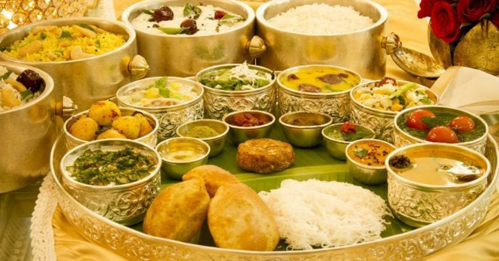

|| Indian - Bhoj ||

- Flavors with a Purpose: Indian cuisine is a tantalizing fusion of taste and health, crafted with a thoughtful selection of herbs and spices that bring not only exquisite flavors but also numerous health benefits. Turmeric, a staple spice, adds anti-inflammatory goodness, transforming meals into edible wellness.
- Vibrant Vegetarianism: More than half of Indian dishes are plant-based, creating a unique culinary identity that harmonizes health and gastronomy. The array of lentils, legumes, and vegetables offer a nutrient-packed canvas, rich in fiber, vitamins, and minerals.
- Spice Symphony: The artistry lies in the marriage of spices and masalas, conjuring a symphony of taste that awakens the senses and delivers antioxidants and nutrition with every bite. The result? A journey of flavors that's as wholesome as it's delicious.
- Regional Riches: India's culinary treasure trove is a mosaic of regions, each weaving its culinary tapestry. From the fiery curries of the south to the savory chaats of the north, every dish narrates a tale of cultural heritage and local ingredients, giving a burst of diversity.
- Culinary Kaleidoscope: The secret to Indian cuisine's allure is in its diversity. Preparation methods dance with distinctiveness, revealing the ingenious fusion of cultures, histories, and geography. It's not just a meal; it's a celebration of flavors with stories to tell.
Here I Brought 4 Indian Bhoj Recipes :